What can we say about the behavior of an exponential function as the input gets larger and larger?
How do vertical stretches and shifts of an exponential function affect its behavior?
Why is the temperature of a cooling or warming object modeled by a function of the form \(F(t) = ab^t + c\text{?}\)
If a quantity changes so that its growth or decay occurs at a constant percentage rate with respect to time, the function is exponential. This is because if the growth or decay rate is \(r\text{,}\) the total amount of the quantity at time \(t\) is given by \(A(t) = a(1+r)^t
\text{,}\) where \(a\) is the amount present at time \(t = 0\text{.}\) Many different natural quantities change according to exponential models: money growth through compounding interest, the growth of a population of cells, and the decay of radioactive elements.
A related situation arises when an object’s temperature changes in response to its surroundings. For instance, if we have a cup of coffee at an initial temperature of \(186^\circ\) Fahrenheit and the cup is placed in a room where the surrounding temperature is \(71^\circ\text{,}\) our intuition and experience tell us that over time the coffee will cool and eventually tend to the \(71^\circ\) temperature of the surroundings. From an experiment 1
In one sense, the data looks exponential: the points appear to lie on a curve that is always decreasing and decreasing at an increasing rate. However, we know that the function can’t have the form \(f(t) = ab^t\) because such a function’s range is the set of all positive real numbers, and it’s impossible for the coffee’s temperature to fall below room temperature (\(71^\circ\)). It is natural to wonder if a function of the form \(g(t) = ab^t + c\) will work. Thus, in order to find a function that fits the data in a situation such as Figure 3.2.2, we begin by investigating and understanding the roles of \(a\text{,}\)\(b\text{,}\) and \(c\) in the behavior of \(g(t) = ab^t + c\text{.}\)
Preview Activity3.2.1.
In Desmos, define \(g(t) = ab^t+c\) and accept the prompt for sliders for \(a\text{,}\)\(b\text{,}\) and \(c\text{.}\) Edit the sliders so that \(a\) has values from \(a = 5\) to \(a = 50\text{,}\)\(b\) has values from \(b = 0.7\) to \(b = 1.3\text{,}\) and \(c\) has values from \(c = -5\) to \(c = 5\) (each with a step-size of 0.01). In addition, in Desmos let \(P = (0, g(0))\) and check the box to show the label. Finally, zoom out so that the window shows an interval of \(t\)-values from \(-30 \le t \le 30\text{.}\)
Set \(b = 1.1\) and explore the effects of changing the values of \(a\) and \(c\text{.}\) Write several sentences to summarize your observations.
Follow the directions for (a) again, this time with \(b = 0.9\)
Set \(a = 5\) and \(c = 4\text{.}\) Explore the effects of changing the value of \(b\text{;}\) be sure to include values of \(b\) both less than and greater than 1. Write several sentences to summarize your observations.
When \(0 \lt b \lt 1\text{,}\) what happens to the graph of \(g\) when we consider positive \(t\)-values that get larger and larger?
Subsection3.2.1Long-term behavior of exponential functions
We have already established that any exponential function of the form \(f(t) = ab^t\) where \(a\) and \(b\) are positive real numbers with \(b \ne 1\) is always concave up and is either always increasing or always decreasing. We next introduce precise language to describe the behavior of an exponential function’s value as \(t\) gets bigger and bigger. To start, let’s consider the two basic exponential functions \(p(t) = 2^t\) and \(q(t) = (\frac{1}{2})^t\) and their respective values at \(t = 10\text{,}\)\(t = 20\text{,}\) and \(t = 30\text{,}\) as displayed in Table 3.2.3 and Table 3.2.4.
Table3.2.4.Data for \(q(t) = (\frac{1}{2})^t\text{.}\)
For the increasing function \(p(t) = 2^t\text{,}\) we see that the output of the function gets very large very quickly. In addition, there is no upper bound to how large the function can be. Indeed, we can make the value of \(p(t)\) as large as we’d like by taking \(t\) sufficiently big. We thus say that as \(t\) increases, \(p(t)\) increases without bound.
For the decreasing function \(q(t) = (\frac{1}{2})^t\text{,}\) we see that the output \(q(t)\) is always positive but getting closer and closer to \(0\text{.}\) Indeed, because we can make \(2^t\) as large as we like, it follows that we can make its reciprocal \(\frac{1}{2^t} = (\frac{1}{2})^t\) as small as we’d like. We thus say that as \(t\) increases, \(q(t)\) approaches \(0\).
To represent these two common phenomena with exponential functions—the value increasing without bound or the value approaching \(0\)—we will use shorthand notation. First, it is natural to write “\(q(t) \to 0\)” as \(t\) increases without bound. Moreover, since we have the notion of the infinite to represent quantities without bound, we use the symbol for infinity and arrow notation (\(\infty\)) and write “\(p(t) \to \infty\)” as \(t\) increases without bound in order to indicate that \(p(t)\) increases without bound.
In Preview Activity 3.2.1, we saw how the value of \(b\) affects the steepness of the graph of \(f(t) = ab^t\text{,}\) as well as how all graphs with \(b \gt 1\) have the similar increasing behavior, and all graphs with \(0 \lt b \lt 1\) have similar decreasing behavior. For instance, by taking \(t\) sufficiently large, we can make \((1.01)^t\) as large as we want; it just takes much larger \(t\) to make \((1.01)^t\) big in comparison to \(2^t\text{.}\) In the same way, we can make \((0.99)^t\) as close to \(0\) as we wish by taking \(t\) sufficiently big, even though it takes longer for \((0.99)^t\) to get close to \(0\) in comparison to \((\frac{1}{2})^t\text{.}\) For an arbitrary choice of \(b\text{,}\) we can say the following.
Long-term behavior of exponential functions.
Let \(f(t) = b^t\) with \(b \gt 0\) and \(b \ne 1\text{.}\)
If \(0 \lt b \lt 1\text{,}\) then \(b^t \to 0\) as \(t \to \infty\text{.}\) We read this notation as “\(b^t\) tends to \(0\) as \(t\) increases without bound.”
If \(b \gt 1\text{,}\) then \(b^t \to \infty\) as \(t \to \infty\text{.}\) We read this notation as “\(b^t\) increases without bound as \(t\) increases without bound.”
In addition, we make a key observation about the use of exponents. For the function \(q(t) = (\frac{1}{2})^t\text{,}\) there are three equivalent ways we may write the function:
In our work with transformations involving horizontal scaling in Exercise 2.4.5.9, we saw that the graph of \(y = h(-t)\) is the reflection of the graph of \(y = h(t)\) across the \(y\)-axis. Therefore, we can say that the graphs of \(p(t) = 2^t\) and \(q(t) = (\frac{1}{2})^t = 2^{-t}\) are reflections of one another in the \(y\)-axis since \(p(-t) = 2^{-t} = q(t)\text{.}\) We see this fact verified in Figure 3.2.5.
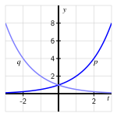
Figure3.2.5.Plots of \(p(t) = 2^t\) and \(q(t) = 2^{-t}\text{.}\)
Similar observations hold for the relationship between the graphs of \(b^{t}\) and \(\frac{1}{b^t} = b^{-t}\) for any positive \(b \ne 1\text{.}\)
Subsection3.2.2The role of \(c\) in \(g(t) = ab^t + c\)
The function \(g(t) = ab^t + c\) is a vertical translation of the function \(f(t) = ab^t\text{.}\) We now have extensive understanding of the behavior of \(f(t)\) and how that behavior depends on \(a\) and \(b\text{.}\) Since a vertical translation by \(c\) does not change the shape of any graph, we expect that \(g\) will exhibit very similar behavior to \(f\text{.}\) Indeed, we can compare the two functions’ graphs as shown in Figure 3.2.6 and Figure 3.2.7 and then make the following general observations.
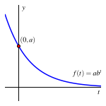Figure3.2.6.Plot of \(f(t) = ab^t\text{.}\)
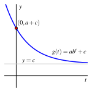Figure3.2.7.Plot of \(g(t) = ab^t+c\text{.}\)
Behavior of vertically shifted exponential functions.
Let \(g(t) = ab^t + c\) with \(a \gt 0\text{,}\)\(b \gt 0\) and \(b \ne 1\text{,}\) and \(c\) any real number.
If \(0 \lt b \lt 1\text{,}\) then \(g(t) = ab^t + c \to c\) as \(t \to \infty\text{.}\) The function \(g\) is always decreasing, always concave up, and has \(y\)-intercept \((0,a+c)\text{.}\) The range of the function is all real numbers greater than \(c\text{.}\)
If \(b \gt 1\text{,}\) then \(g(t) = ab^t + c \to \infty\) as \(t \to \infty\text{.}\) The function \(g\) is always increasing, always concave up, and has \(y\)-intercept \((0,a+c)\text{.}\) The range of the function is all real numbers greater than \(c\text{.}\)
It is also possible to have \(a \lt 0\text{.}\) In this situation, because \(g(t) = ab^t\) is both a reflection of \(f(t) = b^t\) across the \(x\)-axis and a vertical stretch by \(|a|\text{,}\) the function \(g\) is always concave down. If \(0 \lt b \lt 1\) so that \(f\) is always decreasing, then \(g\) is always increasing; if instead \(b \gt 1\) so \(f\) is increasing, then \(g\) is decreasing. Moreover, instead of the range of the function \(g\) having a lower bound as when \(a \gt 0\text{,}\) in this setting the range of \(g\) has an upper bound. These ideas are explored further in Activity 3.2.2.
It’s an important skill to be able to look at an exponential function of the form \(g(t) = ab^t + c\) and form an accurate mental picture of the graph’s main features in light of the values of \(a\text{,}\)\(b\text{,}\) and \(c\text{.}\)
Activity3.2.2.
For each of the following functions, without using graphing technology, determine whether the function is
always increasing or always decreasing;
always concave up or always concave down; and
increasing without bound, decreasing without bound, or increasing/decreasing toward a finite value.
In addition, state the \(y\)-intercept and the range of the function. For each function, write a sentence that explains your thinking and sketch a rough graph of how the function appears.
Newton’s Law of Cooling states that the rate that an object warms or cools occurs in direct proportion to the difference between its own temperature and the temperature of its surroundings. If we return to the coffee temperature data in Table 3.2.1 and recall that the room temperature in that experiment was \(71^\circ\text{,}\) we can see how to use a transformed exponential function to model the data. In Table 3.2.8, we add a row of information to the table where we compute \(F(t)-71\) to subtract the room temperature from each reading.
Table3.2.8.Data for cooling coffee, measured in degrees Fahrenheit at time \(t\) in minutes, plus shifted to account for room temperature.
\(t\)
\(0\)
\(1\)
\(2\)
\(3\)
\(8\)
\(13\)
\(18\)
\(23\)
\(28\)
\(33\)
\(38\)
\(43\)
\(48\)
\(F(t)\)
\(186\)
\(179\)
\(175\)
\(171\)
\(156\)
\(144\)
\(135\)
\(127\)
\(120\)
\(116\)
\(111\)
\(107\)
\(104\)
\(f(t) = F(t) - 71\)
\(115\)
\(108\)
\(104\)
\(100\)
\(85\)
\(73\)
\(64\)
\(56\)
\(49\)
\(45\)
\(40\)
\(36\)
\(33\)
The data in the bottom row of Table 3.2.8 appears exponential, and if we test the data by computing the quotients of output values that correspond to equally-spaced input, we see a nearly constant ratio. In particular,
Of course, there is some measurement error in the data (plus it is only recorded to accuracy of whole degrees), so these computations provide convincing evidence that the underlying function is exponential. In addition, we expect that if the data continued in the bottom row of Table 3.2.8, the values would approach \(0\) because \(F(t)\) will approach \(71\text{.}\)
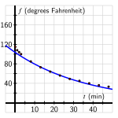Figure3.2.9.Plot of \(f(t) = 103.503 (0.974)^t\text{.}\)
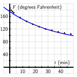Figure3.2.10.Plot of \(F(t) = 103.503 (0.974)^t + 71\text{.}\)
If we choose two of the data points, say \((18,64)\) and \((23,56)\text{,}\) and assume that \(f(t) = ab^t\text{,}\) we can determine the values of \(a\) and \(b\text{.}\) Doing so, it turns out that \(a \approx 103.503\) and \(b \approx 0.974\text{,}\) so \(f(t) = 103.503 ( 0.974)^t\text{.}\) Since \(f(t) = F(t) - 71\text{,}\) we see that \(F(t) = f(t) + 71\text{,}\) so \(F(t) = 103.503 (0.974)^t + 71\text{.}\) Plotting \(f\) against the shifted data and \(F\) along with the original data in Figure 3.2.9 and Figure 3.2.10, we see that the curves go exactly through the points where \(t = 18\) and \(t = 23\) as expected, but also that the function provides a reasonable model for the observed behavior at any time \(t\text{.}\) If our data was even more accurate, we would expect that the curve’s fit would be even better.
Our preceding work with the coffee data can be done similarly with data for any cooling or warming object whose temperature initially differs from its surroundings. Indeed, it is possible to show that Newton’s Law of Cooling implies that the object’s temperature is given by a function of the form \(F(t) = ab^t + c\text{.}\)
Activity3.2.3.
A can of soda (at room temperature) is placed in a refrigerator at time \(t = 0\) (in minutes) and its temperature, \(F(t)\text{,}\) in degrees Fahrenheit, is computed at regular intervals. Based on the data, a model is formulated for the object’s temperature, given by
Consider the simpler (parent) function \(p(t) = (0.95)^t\text{.}\) How do you expect the graph of this function to appear? How will it behave as time increases? Without using graphing technology, sketch a rough graph of \(p\) and write a sentence of explanation.
For the slightly more complicated function \(r(t) = 30 (0.95)^{t}\text{,}\) how do you expect this function to look in comparison to \(p\text{?}\) What is the long-range behavior of this function as \(t\) increases? Without using graphing technology, sketch a rough graph of \(r\) and write a sentence of explanation.
Finally, how do you expect the graph of \(F(t) = 42 + 30(0.95)^{t}\) to appear? Why? First sketch a rough graph without graphing technology, and then use technology to check your thinking and report an accurate, labeled graph on the axes provided in Figure 3.2.11.
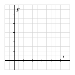
Figure3.2.11.Axes for plotting \(F\text{.}\)
What is the temperature of the refrigerator? What is the room temperature of the surroundings outside the refrigerator? Why?
Determine the average rate of change of \(F\) on the intervals \([10,20]\text{,}\)\([20,30]\text{,}\) and \([30,40]\text{.}\) Write at least two careful sentences that explain the meaning of the values you found, including units, and discuss any overall trend in how the average rate of change is changing.
Activity3.2.4.
A potato initially at room temperature (\(68^\circ\)) is placed in an oven (at \(350^\circ\)) at time \(t = 0\text{.}\) It is known that the potato’s temperature at time \(t\) is given by the function \(F(t) = a - b(0.98)^t\) for some positive constants \(a\) and \(b\text{,}\) where \(F\) is measured in degrees Fahrenheit and \(t\) is time in minutes.
What is the numerical value of \(F(0)\text{?}\) What does this tell you about the value of \(a - b\text{?}\)
Based on the context of the problem, what should be the long-range behavior of the function \(F(t)\text{?}\) Use this fact along with the behavior of \((0.98)^t\) to determine the value of \(a\text{.}\) Write a sentence to explain your thinking.
What is the value of \(b\text{?}\) Why?
Check your work above by plotting the function \(F\) using graphing technology in an appropriate window. Record your results on the axes provided in Figure 3.2.12, labeling the scale on the axes. Then, use the graph to estimate the time at which the potato’s temperature reaches \(325\) degrees.
Figure3.2.12.Axes for plotting \(F\text{.}\)
How can we view the function \(F(t) = a - b(0.98)^t\) as a transformation of the parent function \(f(t) = (0.98)^t\text{?}\) Explain.
Subsection3.2.4Summary
For an exponential function of the form \(f(t) = b^t\text{,}\) the function either approaches zero or grows without bound as the input gets larger and larger. In particular, if \(0 \lt b \lt 1\text{,}\) then \(f(t) = b^t \to 0\) as \(t \to \infty\text{,}\) while if \(b \gt 1\text{,}\) then \(f(t) = b^t \to \infty\) as \(t \to \infty\text{.}\) Scaling \(f\) by a positive value \(a\) (that is, the transformed function \(ab^t\)) does not affect the long-range behavior: whether the function tends to \(0\) or increases without bound depends solely on whether \(b\) is less than or greater than \(1\text{.}\)
The function \(f(t) = b^t\) passes through \((0,1)\text{,}\) is always concave up, is either always increasing or always decreasing, and its range is the set of all positive real numbers. Among these properties, a vertical stretch by a positive value \(a\) only affects the \(y\)-intercept, which is instead \((0,a)\text{.}\) If we include a vertical shift and write \(g(t) = ab^t + c\text{,}\) the biggest change is that the range of \(g\) is the set of all real numbers greater than \(c\text{.}\) In addition, the \(y\)-intercept of \(g\) is \((0,a+c)\text{.}\)
In the situation where \(a \lt 0\text{,}\) several other changes are induced. Here, because \(g(t) = ab^t\) is both a reflection of \(f(t) = b^t\) across the \(x\)-axis and a vertical stretch by \(|a|\text{,}\) the function \(g\) is now always concave down. If \(0 \lt b \lt 1\) so that \(f\) is always decreasing, then \(g\) (the reflected function) is now always increasing; if instead \(b \gt 1\) so \(f\) is increasing, then \(g\) is decreasing. Finally, if \(a \lt 0\text{,}\) then the range of \(g(t) = ab^t + c\) is the set of all real numbers less than \(c\text{.}\)
An exponential function can be thought of as a function that changes at a rate proportional to itself, like how money grows with compound interest or the amount of a radioactive quantity decays. Newton’s Law of Cooling says that the rate of change of an object’s temperature is proportional to the difference between its own temperature and the temperature of its surroundings. This leads to the function that measures the difference between the object’s temperature and room temperature being exponential, and hence the object’s temperature itself is a vertically-shifted exponential function of the form \(F(t) = ab^t + c\text{.}\)
Exercises3.2.5Exercises
1.
If \(b > 1\text{,}\) what is the horizontal asymptote of \(y=ab^t\) as \(t \rightarrow - \infty\text{?}\)
Enter NONE if there is no horizontal asymptote (that is, if the graph goes to \(\pm \infty\) as \(t \rightarrow - \infty\)). Otherwise enter an equation for the line that is the horizontal asymptote.
The horizontal asymptote has equation
2.
Find the long run behavior of each of the following functions. If the function goes to \(\infty\) or \(- \infty\) enter INFINITY or - INFINITY respectively.
(a) As \(x \longrightarrow \infty\text{,}\)\(\ \ 18(0.8)^x \longrightarrow\)
(b) As \(t \longrightarrow - \infty\text{,}\)\(\ \ 9(2.2)^t \longrightarrow\)
(c) As \(t \longrightarrow \infty\text{,}\)\(\ \ 0.6(2 + (0.1)^t) \longrightarrow\)
3.
Suppose \(t_0\) is the t-coordinate of the point of intersection of the graphs below. Complete the statement below in order to correctly describe what happens to \(t_0\) if the value of \(r\) (in the blue graph of \(f(t)=a(1+r)^t\) below) is increased, and all other quantities remain the same.
As \(r\) increases, does the value of \(t_0\) increase, decrease, or remain the same?
Choose
increase
decrease
remain the same
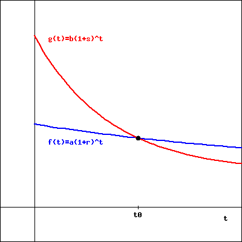
(click on image to enlarge)
4.
A can of soda has been in a refrigerator for several days; the refrigerator has temperature \(41^\circ\) Fahrenheit. Upon removal, the soda is placed on a kitchen table in a room with surrounding temperature \(72^\circ\text{.}\) Let \(F(t)\) represent the soda’s temperature in degrees Fahrenheit at time \(t\) in minutes, where \(t = 0\) corresponds to the time the can is removed from the refrigerator. We know from Newton’s Law of Cooling that \(F\) has form \(F(t) = ab^t + c\) for some constants \(a\text{,}\)\(b\text{,}\) and \(c\text{,}\) where \(0 \lt b \lt 1\text{.}\)
What is the numerical value of the soda’s initial temperature? What is the value of \(F(0)\) in terms of \(a\text{,}\)\(b\text{,}\) and \(c\text{?}\) What do these two observations tell us?
What is the numerical value of the soda’s long-term temperature? What is the long-term value of \(F(t)\) in terms of \(a\text{,}\)\(b\text{,}\) and \(c\text{?}\) What do these two observations tell us?
Using your work in (a) and (b), determine the numerical values of \(a\) and \(c\text{.}\)
Suppose it can be determined that \(b = 0.931\text{.}\) What is the soda’s temperature after \(10\) minutes?
5.
Consider the graphs of the following four functions \(p\text{,}\)\(q\text{,}\)\(r\text{,}\) and \(s\text{.}\) Each is a shifted exponential function of the form \(ab^t + c\text{.}\)
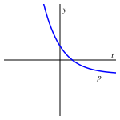
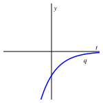
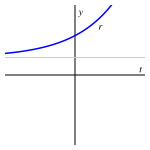
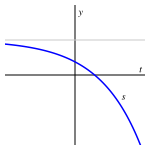
For each function \(p\text{,}\)\(q\text{,}\)\(r\text{,}\) and \(s\text{,}\) determine
whether \(a \gt 0\) or \(a \lt 0\text{;}\)
whether \(0 \lt b \lt 1\) or \(b \gt 1\text{;}\)
whether \(c \gt 0\text{,}\)\(c = 0\text{,}\) or \(c \lt 0\text{;}\) and
the range of the function in terms of \(c\text{.}\)
6.
A cup of coffee has its temperature, \(C(t)\text{,}\) measured in degrees Celsius. When poured outdoors on a cold morning, its temperature is \(C(0) = 95\text{.}\) Ten minutes later, \(C(10) = 80\text{.}\) If the surrounding temperature outside is \(0^\circ\) Celsius, find a formula for a function \(C(t)\) that models the coffee’s temperature at time \(t\text{.}\)
In addition, recall that we can convert between Celsius and Fahrenheit according to the equations \(F = \frac{9}{5}C + 32\) and \(C = \frac{5}{9}(F-32)\text{.}\) Use this information to also find a formula for \(F(t)\text{,}\) the coffee’s Fahrenheit temperature at time \(t\text{.}\) What is similar and what is different regarding the functions \(C(t)\) and \(F(t)\text{?}\)